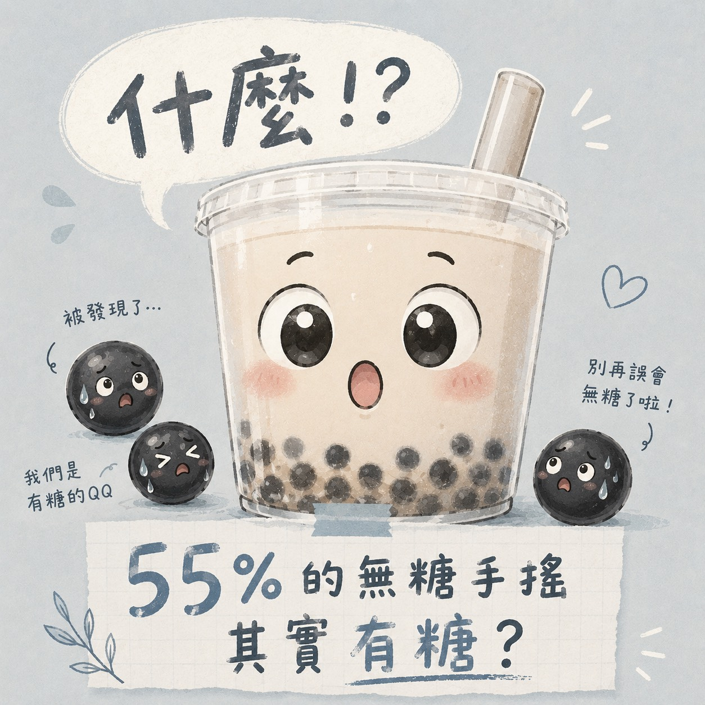
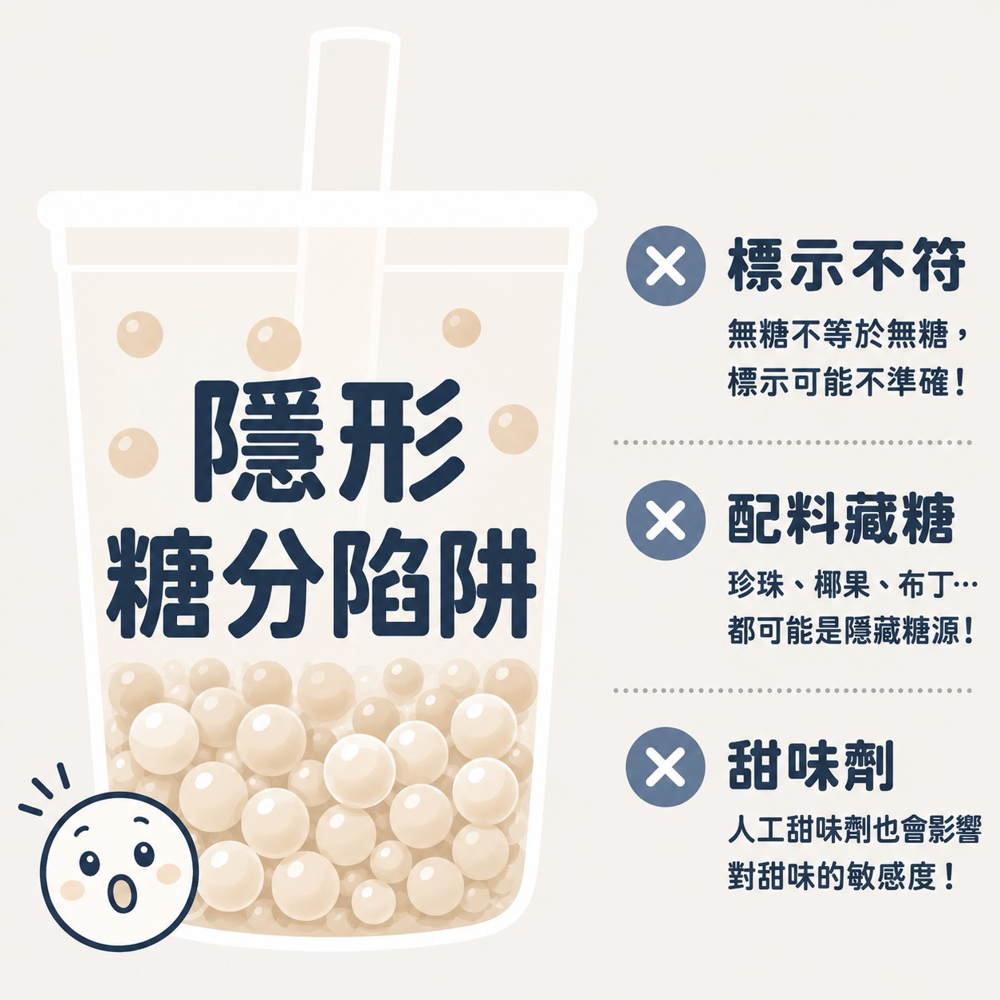
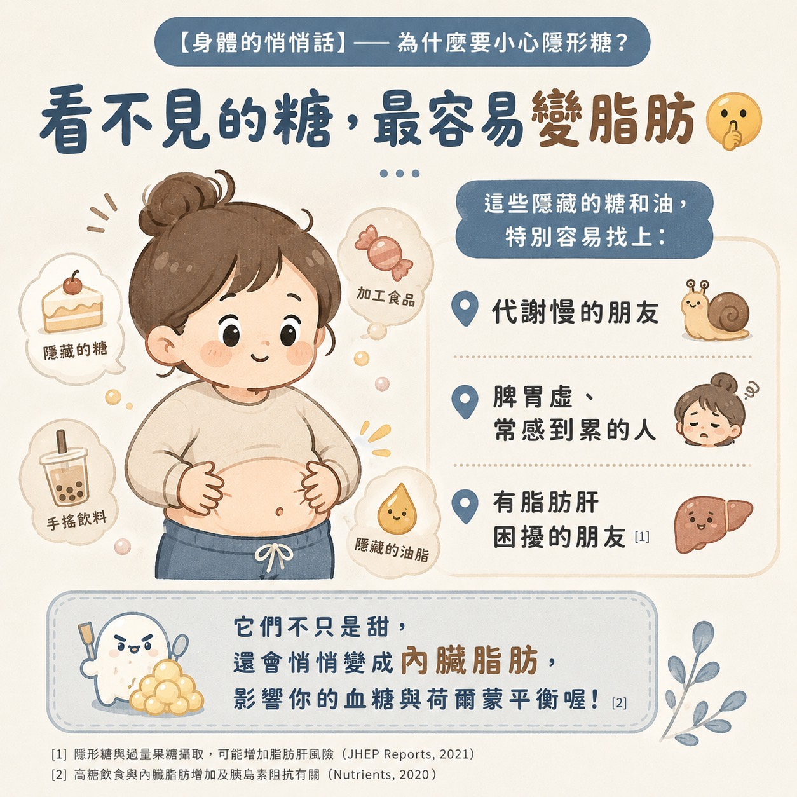
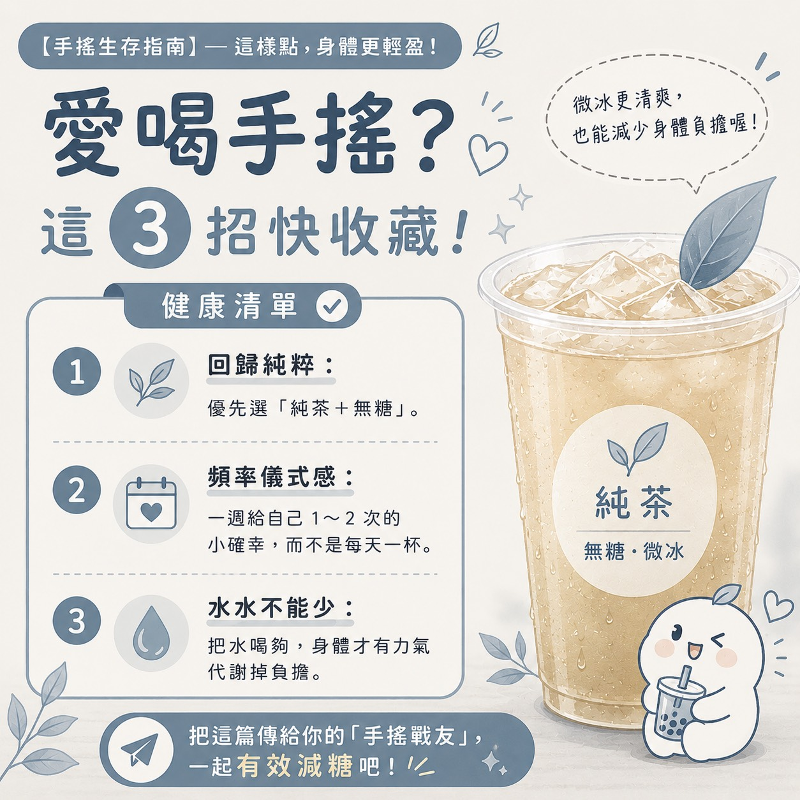
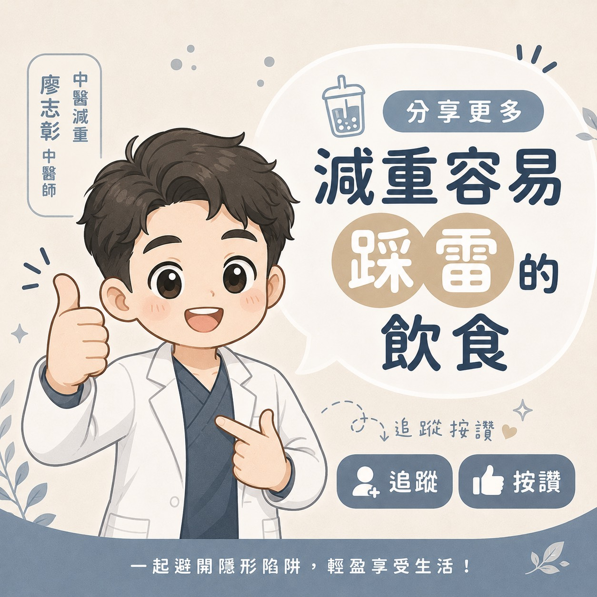

有一種甜，是手搖飲說它不甜
「大杯無糖綠，加珍珠，微冰」是不少人下午想提神時的固定選擇。聽起來已經很克制，因為主飲料是無糖，感覺比全糖奶茶更安心。
但若正在減重、控制血糖或調整內臟脂肪，這杯飲料仍值得多看一眼。因為手搖飲的糖分不一定只來自店員加進去的糖漿，也可能藏在果汁、乳品、奶蓋、珍珠、椰果、蒟蒻、布丁或其他配料裡。





為什麼「無糖」不一定等於完全沒有糖？
近期台大食品安全與健康研究所暨公共衛生碩士學位學程羅宇軒副教授團隊針對手搖飲進行研究，指出市售手搖飲的實際糖分與消費者理解之間可能有落差。中央社報導也整理，研究發現多數樣本的總糖量高於標示，部分標示無加糖的飲品仍可檢出糖分。
這並不代表所有店家都故意加糖，而是「無加糖」和「完全沒有糖」不是同一件事。只要原料本身含糖，例如水果、果汁、牛奶、奶精或配料，就可能讓一杯飲料實際含有糖分。
手搖飲的隱形糖通常藏在哪裡？
- 果汁與水果茶：水果本身含糖，果汁濃縮後更容易讓糖量上升
- 乳品與奶茶：牛奶有乳糖，奶精或調味粉也可能含糖或油脂
- 珍珠、粉粿、椰果、蒟蒻、布丁：配料常用糖水浸泡或調味
- 奶蓋與調味醬：可能同時帶來糖、油脂與額外熱量
- 人工甜味劑：雖然熱量不一定高，但仍可能影響對甜味的敏感度與飲食習慣
中醫減重怎麼看手搖飲？
從中醫角度來看，減重不只是少吃熱量，也要看脾胃運化、水分代謝、痰濕堆積、睡眠與壓力。若本身容易水腫、脹氣、疲倦、排便不順或代謝偏慢，長期喝含糖或含配料飲品，容易讓身體負擔變重。
尤其是又甜又冰的飲品，對脾胃虛弱、容易腹脹或怕冷的人，可能讓消化運化更不穩定。久而久之，食慾、血糖波動與脂肪堆積也可能互相影響，讓減重變得更卡。
想喝手搖飲，廖醫師建議這樣選
- 優先選擇純茶、無糖，避免奶蓋、果汁基底與多種配料
- 若真的想加料，建議只選一種，並降低當天其他澱粉與甜食
- 把每天一杯改成每週 1 至 2 杯，讓手搖飲變成儀式感，而不是日常水分來源
- 微冰或去冰都可以，但若腸胃容易不舒服，建議少冰、慢慢喝
- 記得補足白開水，水分足夠，排便與代謝節奏才比較穩定
減重期間一定不能喝手搖飲嗎？
不一定。真正重要的是頻率、份量與內容。偶爾喝一杯純茶無糖，和每天喝一杯加珍珠、奶蓋、果汁或布丁的飲料，對身體的影響差很多。
若你正在進行中醫減重，建議把手搖飲記錄進飲食日記。回診時讓醫師一起看，通常比單純問「這個能不能喝」更準確，因為每個人的體質、作息、食慾與代謝狀態都不同。
結論：不要只看糖度，要看整杯飲料
無糖手搖飲不一定是減重敵人，但「無糖」也不等於可以忽略配料、乳品、果汁與飲用頻率。想讓減重更穩定，可以先從最簡單的選擇開始：純茶、無糖、少配料、降低頻率、補足水分。
健康的路上，慢慢來反而比較快。讓飲料回到偶爾享受的位置，身體才更有空間回到穩定的代謝節奏。
參考資料
本文為一般飲食衛教資訊，不能取代個別診斷與營養處方。若有糖尿病、脂肪肝、慢性病、懷孕哺乳，或正在進行減重治療，飲食調整請先與醫師討論。